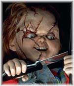

Você sabe qual seria a diferença entre um policial britânico, um australiano e um americano?
Situação: você está caminhando com sua esposa e um filho pequeno por uma rua deserta. De repente, aparece um homem mal-encarado segurando uma faca enorme e afiada. Ele olha para você, grita palavrões, aponta a faca e parte para te atacar. Você, exímio atirador, está portando uma Glock 9mm. Você tem apenas alguns segundos antes que ele chegue em você e sua família. O que você faria?Resposta do policial britânico:
Bem, as informações não são suficientes para responder à questão!- O homem aparenta ser pobre ou oprimido?
- Eu tinha feito alguma coisa que provocou o ataque?
- Eu e minha família conseguiríamos correr?
- O que minha mulher pensa sobre isso?
- E meu filho, o que pensa?
- Será que daria para eu segurar a arma pelo cano, como um bastão, e derrubar a faca?
- O que diz a lei sobre este tipo de situação?
- A pistola Glock é uma arma segura?
- Aliás, eu poderia estar portando uma arma? Que tipo de mensagem isso passa para a sociedade e para meu filho?
- Será que o homem se contentaria em matar somente à mim, sem ferir minha família?
- Afinal ele quer me matar, ou se satisfaria apenas me ferindo?
- Se eu o agarrasse pelas pernas, daria tempo para minha família correr enquanto ele me esfaqueia?
- Não deveria primeiro ligar para 190?
- Porque a tal rua é tão deserta? Não deveríamos ter cobrado do governo maior segurança, feito um mutirão para limpar e pintar o local e torná-lo mais alegre, saudável, desencorajando este tipo de comportamento?
- Se eu apontar a arma e ele fugir, serei culpado se ele tropeçar, cair no chão, bater a cabeça e morrer?
- Se eu atirar nele e for condenado na Justiça, ele vai poder me processar, eu vou perder meu emprego, minha credibilidade e a casa onde moramos?
Resposta do policial australiano:
BANG!Resposta do policial americano:
BANG! BANG! BANG! BANG! BANG! BANG! BANG! BANG! BANG! BANG! BANG! BANG! click… (barulho de arma sendo recarregada…) BANG! BANG! BANG! BANG! BANG! BANG! BANG! BANG! BANG! BANG! BANG! BANG! click.Filho do policial: ‘Agrupou bem os tiros, pai! Estas eram aquelas munições especiais da Winchester?’
* Esta eu vi neste blog policial da Inglaterra e não podia deixar de colocar aqui, numa tradução livre, é claro. De qual resposta mais se aproxima o caso dos policiais brasileiros? ;)